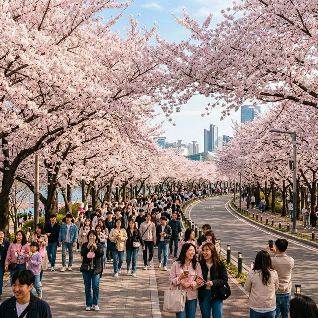
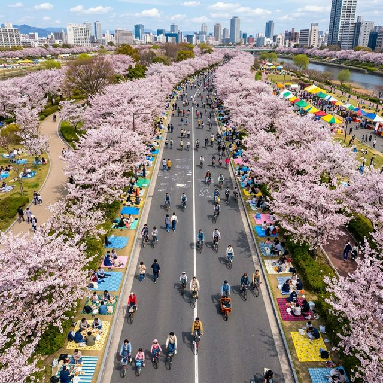
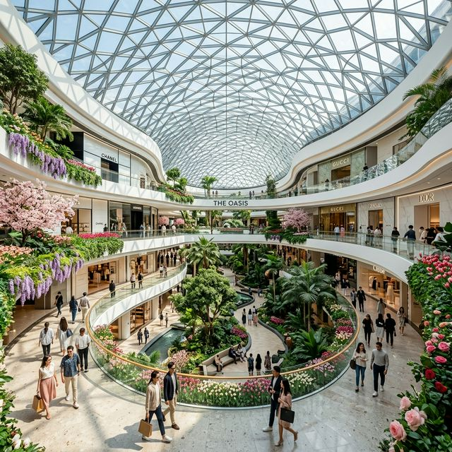

가장 먼저 챙겨야 할 것은 '교통 통제' 데이터입니다. 행사 기간인 4월 3일 낮 12시부터 4월 8일 낮 12시까지, 국회 뒤편 여의서로 1.7km 구간과 서강대교 남단 공영주차장 진입로 등 축제장 주변의 모든 차량 출입이 24시간 전면 통제됩니다. 말 그대로 보행자만을 위한 거대한 산책로가 조성되는 것입니다.
| 통제 구역명 (Zone) | 통제 상세 구간 (Route) | 통제 일시 (Date/Time) | 예외 차량 (Except) |
|---|---|---|---|
| 여의서로 (윤중로) | 서강대교 남단 ~ 국회 북문 ~ 여의2교 북단 (1.7km) | 4/3(금) 12:00 ~ 4/8(수) 12:00 | 소방, 구급, 경찰 등 긴급 차량만 진입 가능 |
| 여의하류IC 국회 방향 | 노들로 ~ 여의하류IC 국회 진입 램프 | 행사 기간 중 매일 오전 10시 ~ 심야 24시 | 마을버스 등 일부 대중교통 노선 탄력 운영 |
| 순복음교회 주변 | 여의동로, 국회대로 등 이면도로 탄력 통제 | 4/4(토) ~ 4/5(일) 주말 한정 교통 분산 통제 | 인근 아파트 거주민 스티커 부착 차량 허용 |
이번 주말에 차를 몰고 여의도로 직접 들어간다는 것은 벚꽃보다 앞차의 브레이크 등만 수 시간 쳐다보겠다는 의미와 같습니다. 경찰은 여의도 일대의 극심한 불법 주정차 단속을 예고하며 30대 이상의 견인차를 24시간 대기시킬 계획입니다.
지하철 노선별 최적의 접근 경로: 벚꽃 터널 중심부(서강대교 남단 방면)로 곧장 접근하시려면 지하철 9호선 국회의사당역(1, 2, 6번 출구)에서 하차하여 도보로 약 5분 정도 이동하는 것이 가장 효율적입니다. 5호선 여의나루역은 한강공원에 피크닉을 오는 인파와 겹쳐 주말 피크 타임(오후 1시~4시)에는 출구가 통제되거나 10분 이상 지체될 수 있으니 5호선 여의도역에서 내려 여의도공원을 가로지르는 산책 코스를 걷는 것도 훌륭한 대안입니다.

과거 여의도 봄꽃축제하면 떠오르던 왁자지껄한 야시장과 커다란 앰프 소리가 사라지고 있습니다. 올해 영등포구청은 '지속가능한 에코 페스티벌(Eco Festival)'을 슬로건으로 내세웠습니다. 푸드트럭 구역은 기존 절반 수준인 20대로 축소한 대신, 전 구간에 걸쳐 분리수거 전문가 100여 명을 배치한 '클린 존(Clean Zone)'을 운영합니다.
대형 무대 대신 꽃길 중간중간 거리 예술가들의 어쿠스틱 버스킹 7개소를 마련하여, 벚꽃 사이로 스며드는 잔잔한 음악을 즐길 수 있도록 구성했습니다. 특히 금요일(4/3) 밤과 주말 밤에 실시되는 야간 벚꽃 경관 조명은 기존 단순한 발광다이오드(LED) 투사 방식에서 스마트 디밍(Smart Dimming) 기술을 적용해, 수종과 잎의 떨림에 따라 조명의 색온도가 미묘하게 바뀌는 '미디어 아트' 수준의 야경을 선사할 것입니다.
벚꽃길의 인파 속에서 계속 걷기만 하는 것은 생각보다 체력 소모가 큽니다. 가장 스마트한 연인/가족들은 벚꽃 놀이와 실내 쇼핑 공간의 동선을 분리하여 활용합니다. 여의도의 핵심 랜드마크인 더현대 서울(The Hyundai Seoul)과의 연계 전략을 제안합니다.
동선 플랜 A: 오전 벚꽃 힐링 후 오후 쇼핑 (강력 추천)
1️⃣ 오전 09:30: 국회의사당역 하차 후 윤중로 진입 (가장 인파가 적어 사진 찍기 좋은 골든타임)
2️⃣ 오전 11:00: 윤중로 북단부터 국회 남문까지 산책로 완주 후, 도보로 한강공원 방면 이동
3️⃣ 낮 12:00: 여의도공원 중앙 보행로를 따라 '더현대 서울'로 걸어서 진입 (도보 15분 소요)
4️⃣ 오후 12:30: 대기 애플리케이션 '현대식품관'을 통해 유명 지하 1층 델리나 6층 식당가 사전 웨이팅 등록
5️⃣ 오후 15:00: 5층 사운즈 포레스트 실내 정원에서 봄꽃 테마 팝업스토어 및 커피 타임

이번 축제 기간 동안 영등포구 관내(여의동 중심)에 미치는 경제 1차 유발 효과는 무려 1,200억 원 이상으로 추산됩니다. 특히 5일간의 축제 기간 동안 여의도 인근 비즈니스호텔 스탠더드룸의 만실 상태가 계속되고 있으며, 인근 편의점(CU, GS25, 세븐일레븐) 30여 곳은 생수, 돗자리, 물티슈, 간이 폰 충전기 재고를 평소 대비 1,000% 증량하여 입고시켰습니다.
여의도 일대의 유명 맛집(특히 평양냉면, 돈가스 전문점 등)은 주말 브레이크 타임을 아예 없애고 인력 2배 충원으로 상춘객들을 맞이할 준비를 마쳤습니다. 금융가가 밀집해 평일 장사 위주였던 여의도가 4월 첫 주만큼은 완벽한 '투어리즘 특수'를 누리게 되는 셈입니다. 노점상을 줄이고 주변 인근 상가로 고객들의 소비력을 분산시키려는 지자체의 노력도 올해 매출 지표 상향의 중요한 팩터로 작용할 전망입니다.
2026년 기상청의 주간 예보에 따르면, 4월 7일(화) 오후부터 전국적인 봄비 소식이 잡혀있습니다. 이는 곧 축제의 핵심 주말인 4/4(토) ~ 4/5(일) 이틀이 벚꽃이 흩날리는 절정의 장관을 볼 수 있는 유일한 기회라는 것을 의미합니다. 조금 이른 아침, 부지런하게 움직이신다면 인파의 번잡함을 뚫고 가장 상쾌하고 아름다운 봄의 에너지를 받아 가실 수 있을 것입니다.
하얗게 부서지는 꽃비 아래에서 남기는 한 장의 아름다운 사진, 그리고 가족과 연인의 환한 웃음소리로 일상의 스트레스를 모두 씻어내는 주말이 되기를 진심으로 기원합니다. 개막일 오전 현장에 다시 투입되어 가장 빠른 실시간 개화 상황 리포트로 여러분의 나들이를 돕겠습니다! 🌸🏃♂️